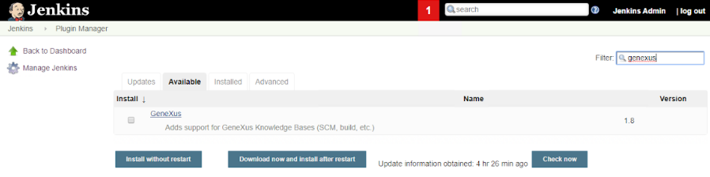
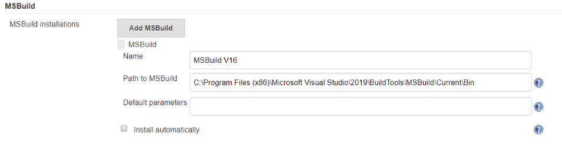
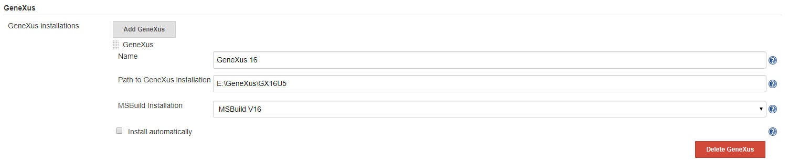

Below are the steps that must be followed to install and configure Jenkins.
The steps to install the GeneXus plugin in Jenkins are also indicated.
Step 1: Download and install Jenkins 2.329 or higher.
Step 2: Install the GeneXus plugin for Jenkins.
Being inside Jenkins, click on the Manage Jenkins option. Then, click on the Manage Plugins option. Select the Available tab and search for “genexus” inside the Filter box.

You will find the GeneXus Plugin. Once it is installed, the Jenkins service must be restarted.
Step 3: Install and configure the MSBuild in the Jenkins plugin.
Install the Build Tools for Visual Studio and make sure that MSBuild is referenced in the path for MSBuild.
For example, the msbuild.exe is installed in a path similar to the following: C: \ Program Files (x86) \ Microsoft Visual Studio \ 2019 \ BuildTools \ MSBuild \ Current \ Bin
Click on the Manage Jenkins option. Then, click on the Global Tool Configuration option. Go to the MSBuild section and press the MSBuild Installations... button to indicate the directory where the msbuild.exe file is located (path indicated above):

Note: The MSBuild configured must be 32 bits.
Step 4: Configure GeneXus in the Jenkins plugin.
Click on the Manage Jenkins option. Then, click on the Global Tool Configuration option. Go to the GeneXus section and press the GeneXus Installations... button to configure the path where GeneXus is installed.
You must also indicate the MSBuild Name that was configured in the previous step:

When Jenkins is installed, it is running as a Windows service. By default, it is running using the Local System Account user, but if tasks are executed by command line, things are saved related to the user who is connected to the machine. Therefore, if Jenkins service runs with another user it can't find them.
That is why it is recommended to change the user with which the Jenkins service runs, configuring to run with the same user that is connected to the machine.
This error can occur if the correct Windows user is not correctly configured:
OpenKB: OpenKnowledgeBase Directory=E:\Models\TestIntegrado ========== Open Knowledge Base Task started ========== E:\GeneXus\GX16U5\TeamDev.msbuild(82,3): error : NoPermissionsOnDB E:\GeneXus\GX16U5\TeamDev.msbuild(82,3): error : > Open Knowledge Base Task Failed
| Backlinks | |
| Toc:DevOps in GeneXus | How to create a unit test and add a task using the GeneXus Jenkins Plugin |